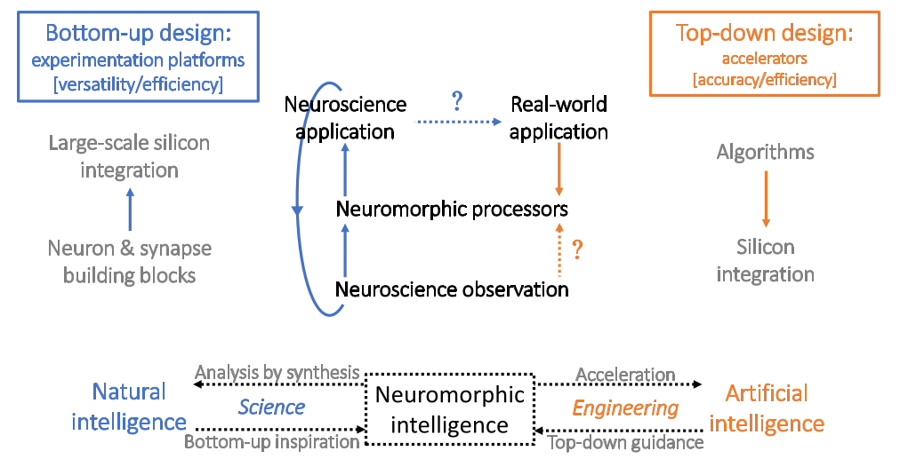

Introduction to co-design
for on-device learning
Michail Rontionov, University of Southhampton
Jens E. Pedersen, Technical University of Denmark
Agenda
- Current neuromorphic toolchains
- The Neuromorphic Intermediate Representation (NIR)
- Motivating work: NIR → FPGA Compiler
- Compilation Demonstration
Current neuromorphic toolchains
Neuromorphic Toolchains: What do they do?
Typically, they encode three important parts:
- Network Conception and Simulation.
- Translation to Hardware Representation.
- Hardware Execution.
 →
→
 →
→

Network Simulators
The one you pick typically depends on where you're coming from.
Neuro-science


Machine Learning


Hardware Representation
If your simulator was built for your hardware, you're in a good position.


Hardware Representation
But neuromorphics is a young field.
- What if your simulator or hardware doesn't support your model?
- What if an iteration of your existing network isn't supported by your simulator or hardware?
- What if your hardware doesn't have the representational accuracy required?
- What if you no longer have access to the hardware and need to use something else?
- How can you evaluate your algorithm across various hardware paradigms?
- …
You're stuck! Porting your code is costly and unreliable.
Why?
Frenkel, Charlotte, David Bol, and Giacomo Indiveri. "Bottom-up and top-down approaches for the design of neuromorphic processing systems: Tradeoffs and synergies between natural and artificial intelligence." Proceedings of the IEEE 111.6 (2023): 623-652.
Bottom-Up Hardware
Most common, at many different scales & types.

Analogue Memristor Arrays
(1024 synapses)
Ongoing work at University of Southampton
ODIN on ASIC
(64k synapses, 256 neurons)
Frenkel, Charlotte, et al. "A 0.086-mm² 12.7-pJ/SOP 64k-synapse 256-neuron online-learning digital spiking neuromorphic processor in 28-nm CMOS." IEEE transactions on biomedical circuits and systems 13.1 (2018): 145-158.

SpiNNaker with ARM
(up to 1B neurons & 1T synapses)
Furber, Steve B., et al. "The spinnaker project." Proceedings of the IEEE 102.5 (2014): 652-665.
Top-Down
Dedicated & optimized to a specific algorithm.
SPECK
Spiking CNN for Sinabs
Richter, Ole, et al. "Speck: A smart event-based vision sensor with a low latency 327k neuron convolutional neuronal network processing pipeline." arXiv preprint arXiv:2304.06793 (2023).
SPOON
Spiking CNN with RTDP Learning
Frenkel, Charlotte, Jean-Didier Legat, and David Bol. "A 28-nm convolutional neuromorphic processor enabling online learning with spike-based retinas." 2020 IEEE International Symposium on Circuits and Systems (ISCAS). IEEE, 2020.
BrainDrop
Mixed-Signal Neural Engineering Framework (NEF) Accelerator
Neckar, Alexander, et al. "Braindrop: A mixed-signal neuromorphic architecture with a dynamical systems-based programming model." Proceedings of the IEEE 107.1 (2018): 144-164.
Introduction to the
Neuromorphic Intermediate Representation
The Babel Tower of Neuromorphics
Simulators
BindsNet, Nengo, Norse, snnTorch, Sinabs, Rockpool, Spyx, Lava-dl, ...
Hardware
CPUs, GPUs, Intel Loihi, SpiNNaker2, SynSense Speck & Xylo, ...
The Cost of Fragmentation
⏱️ Research Velocity
Months spent on platform-specific adaptations
🔄 Reproducibility Crisis
Studies can't be validated across platforms
🚧 Innovation Barriers
Hardware-software co-design slowed by incompatibility
Not a new problem...
- NeuroML (2001): Standardized models. Not widely adopted for hardware implementations.
- NineML (2008): Focused on biological realism but lacked hardware abstraction.
- PyNN (2009): Provided a common API for simulators but didn't address hardware mapping.
... if they can, we can too!

Really not a new problem
1950s-60s
CPU Fragmentation
IBM, CDC, Burroughs...1970s-80s
Standardization
Common instruction sets (x86, RISC, ...)Today
Portable Software
Write once, run anywhere2010s
ML Fragmentation
TensorFlow, PyTorch, Caffe, Theano...ONNX Era
Standardization
Intermediate representationsToday
Seamless Deployment
Train anywhere, deploy everywhereWhat's the common denominator?
Instruction axioms
- Computational primitives
- Idealized ODE
- Unambiguous parameterization
- Composes
- Graph representation
- Nodes as primitives
- Edges as dataflow